- 看懂工作時程表每個欄位。
- 讀完 SOP「住宿規定事項」。
- 熟悉房型、價格、入住隻數與優惠。
- 記住入住、退房與接送時間規則。
工作流程
從第一步依序完成
一條完整流程，按順序看每一步的細項。
一定要背工作時查特殊狀況
建議依序完成
查看改版前舊版新人上手：從認識現場到獨立照護
按步驟看一次，不用一開始就背完所有細節。
- 01看懂一天的工作順序知道每一輪照護、回報和收班大約在做什麼。
- 02認識房型與入住上限先看房間外觀、特色，再確認最多能住幾隻。
- 03依情境學照護流程入住交接、住宿中每日清房；退房交接後接空房清潔。
- 04用位置圖找房號與貓咪先看房間位置，再點房號核對名字。
- 05需要報價時，照順序試算先房型與貓數，再日期、時段、優惠和已確認加價。
- 06遇到客人提問，先查再回答使用常見問答；不確定的例外先請夥伴確認。
帶訓到職帶訓內容：了解規定、練習系統、實際操作現場帶訓清單；新人先依上方六步路線學習
記憶口訣讀規則 → 會系統 → 做一次
- 確認次月份排班。
- 完成管理系統每日必做與簽核。
- 會切換住宿貓咪。
- 會記飲食、便尿與關懷聯絡簿。
- 實際做一次雞胸肉分裝與鮮食製作。
- 實際更換一餐，並完成系統紀錄。
- 練習把照護文字、照片與影片完整回報。
- 會查房價、加貓與安親規則，不靠猜。
先背
入住退房時間與加費
一定要背：先分正常時段，再判斷是否加費
24H退房、入住時間圖同一條 0–24 點時間尺度
營業外・原則不接正常辦理額外加費
退房與入住辦理
對外接待可辦交接
00–12不辦理12–19接待19–24不辦理
退房辦理正常 12–14
00–12原則不接12–14正常14–19＋10%19–24原則不接
入住辦理正常 15–19
00–12原則不接12–15＋10%15–19正常19–24原則不接
一般日只背兩段：退房 12–14 正常；入住 15–19 正常。其他營業時段為加費；連假改到「價格」分頁查。
10% 安親費與時間外 300 元
橘色＝營業時間內提早／延後；灰色＝營業時間外，原則不接
未滿30 分鐘不計費
滿30 分鐘房價 × 5%
滿60 分鐘房價 × 10%
第二組健康門檻3 年、1 月、7 日、6 月
核心疫苗3 年內
體外驅蟲1 個月內
疫苗後7 天內不入住
結紮滿 6 個月原則需完成
另外先評估：3–6 個月幼貓、15 歲以上高齡貓。
第三組費用與例外30%、10%、6 小時
一般訂金30%
安親每小時一晚定價 10%
不過夜安親最低 6 小時
噴尿清潔2,000 元／間
期滿未退房24 小時視同棄養
老室友累計 10 晚，資格 1 年
房型
看照片認房型
先認外觀、容量與特色；價錢統一到「價格」分頁查
住宿費怎麼算
輸入貓數、房型和住宿／安親時間，按「確定計算」；先看優惠與費用判定，再看最下方總價。房價表與完整規則放在下方，需要時再展開。
房價對照｜一般日 vs 春節
看同一房型的每晚價格與加貓費；春節連續假日及前一日（2027/2/2–2/10）按春節價。
| 房型／入住上限 | 一般日 每間每晚 | 春節檔期 每間每晚 |
|---|
多房價格表｜一般日（選看）
| 房間數 | 1 隻 | 2 隻 | 3 隻 | 4 隻 | 5 隻 | 6 隻 |
|---|
本表只查一般日多房總價。春節多房由計算器估算，需夥伴覆核。
完整計價規則｜展開查看
先選貓咪數量，再選房型與房間數
- 同一筆試算限同房型，可選多間；不同房型請分開試算，再向店家確認。
選住宿或安親
- 住宿：填入住、退房日期與時間。
- 安親：填單日與起訖時間，費用另算，不與住宿費併計。
- 連假不開放參觀；連假／春節特殊安排先問夥伴，不自行估價。
算日期與住宿晚數
- 入住日計費、退房日不計；依每晚日別加總房價。
- 連假價＝國定假日及前一天；春節價＝春節連續假日及前一天。
- 目前檔期：2026/10/7–11、10/23–26、12/24–27、12/31–2027/1/3；2027/2/2–10、2/26–3/1。
- 更早日期可試算；未列入檔期按一般日價。春節細則見下方。
春節規則｜日期、時段、訂金與取消
- 春節住宿日期為 2027/2/3–2/10，共 8 晚；入住至少須住滿其中 5 晚。春節前一日 2/2 也按春節價格計算，價格看上方「房價對照」。
- 營業時間 10:00–19:00（除夕 9:00–18:00）；入住 14:00–18:00、退房 10:00–12:00。僅 2/3 可預約提早入住，最早 10:00，按一晚住宿費每小時 10% 計；春節不提供其他提前／延後安親。
- 訂房需付住宿費 50% 訂金；確認後 3 日內付款（不含通知當日），入住當天結清尾款，並配合安排入住面談。
- 取消：2026/11/30（含）前全退訂金；12/1–12/31 退訂金 50%；2027/1/1 起不退。只可取消，不可延長或縮短日期；不開放參觀或家人探訪。
- 春節檔期不適用折扣；春節檔期前後的一般住宿日可依資格計長住／老室友優惠。優先受理住滿整個春節及老室友，仍以空房、店家確認與面談為準。
來源：春節官網公告、春節預約表；日期另參考2027 行事曆。
試算器會依日期自動切換春節價格：算時段費
- 正常時段：入住 15:00–19:00；退房 12:00–14:00。
- 一般日提早入住／延後退房須預約：每小時一晚房價 10%；滿 30 分鐘按 5% 計。
- 連假首日提前入住、末日延後退房：核准後各加 1 晚房費。19:00 後未退房按多住 1 日。
另算安親費
- 公式：單晚房價 × 10% × 計費時數；最低 6 小時。
- 限一般日且須預約；連假／春節不提供。
套用住宿優惠
- 長住看整段連續住宿晚數：10 晚 8 折、20 晚 75 折、30 晚 7 折；折在符合資格的一般日住宿晚，連假（含前一天）與春節價住宿晚不折。
- 老室友資格滿 10 晚取得、效期 1 年；房價頁列一般日 8 折、連假 9 折、春節不適用，且不與長住合併。連假 9 折與住宿須知文字有差異，試算先依房價頁，正式報價由夥伴確認。
加已確認費用
- 營業外接送（12:00 前／19:00 後）原則不接；夥伴核准承接後，每小時 +300 元。19:00 後未完成退房依多住 1 晚計算，不另加營業外接送費。
- 代購：商品費 +100 元；就醫：實支費用 +200 元車馬費。
- 特殊清潔：確認後 2,000 元／間。一般訂金 30% 為預收款，非額外費用。
一般取消退訂比例（選看）
| 距離入住日 | 退還訂金 |
|---|
連續假期原則上不退訂金，可在 1 年內改期；跨行退款手續費由家長負擔。
價格計算機
1選貓咪和房間
2選服務
住宿要填入住與退房；安親是當日接送，請填單日和起訖時間，兩種費用分開計算。
3選入住和退房日期、時間
入住日計入房費，退房日不計住宿晚數。系統會依日期判斷連假、春節與長住優惠。
3選安親日期和時間
4選安親時段，計算時數
4確認老室友優惠資格
連假、春節和長住優惠由系統按入住日期自動判斷，不用手動勾選。
5加上已確認的額外費用（沒有就略過）
營業外接送｜每小時 +300 元
系統會依入住／退房時間自動計算，不必填時數。
按下後才會開始試算
6計算結果
查看費用如何加總
查看完整計算步驟
優惠判定後總價—
連假優惠｜展開查看
房號
房號位置圖
工作時查：先看位置，再點房號放大資料
最後更新：2026.10.11紅、綠、米白沿用原始房況圖；貓咪與房況變動時要同步更新。
原圖紅色原圖綠色待換
100不踢／不蹦／千杯
201
203
205
207
209
211
213帥哥
202啾吉
204Uni／憨嘉／晃子
206
208Pong
210小八／小七
212嘛嘛
214
107普羅／漿果
108普羅／漿果
301
303
302奶糖
304大餅
103
104
102
105
101Bear／Hei Hei／合計
106
305
306
501
502
貓咪
貓咪資訊
依名字查個別照護；「合計／分開計」沿用交代方式
貓咪目錄點開搜尋或查看各貓咪資料11 隻
共 11 隻貓咪
找不到符合的貓咪，試試其他名字或關鍵字。
待補照片
普羅
合計- 個性
- 尚未提供
- 中飯
- 系統訂尚未提供調整後尚未提供
- 晚飯
- 系統訂尚未提供調整後尚未提供
- 身體狀況
- 尚未提供
- 備註
- 濕食、凍乾都先暫停。活動時拉開自家房門，讓牠能回房上廁所。
待補照片
漿果
合計- 個性
- 尚未提供
- 中飯
- 系統訂尚未提供調整後尚未提供
- 晚飯
- 系統訂尚未提供調整後尚未提供
- 身體狀況
- 尚未提供
- 備註
- 目前暫停濕食。活動時拉開自家房門，讓牠能回房上廁所。
待補照片
小七
分開計- 個性
- 尚未提供
- 中飯
- 系統訂乾糧 25 g調整後尚未提供
- 晚飯
- 系統訂乾糧 48 g調整後尚未提供
- 身體狀況
- 尚未提供
- 備註
- 乾乾用大顆乾乾並加凍乾；原有餵食提醒：濕食＋5 顆凍乾、肉泥與水拌勻，水碗放最下層。與小八共用一個大碗（黑碗／藍白碗）。
待補照片
小八
分開計- 個性
- 尚未提供
- 中飯
- 系統訂乾糧 20 g調整後尚未提供
- 晚飯
- 系統訂乾糧 37 g調整後尚未提供
- 身體狀況
- 尚未提供
- 備註
- 早上要吃藥；乾乾用小顆乾乾。與小七共用一個大碗（黑碗／藍白碗）。肉泥與水拌勻，水碗放最下層。
待補照片
帥哥
個別照護- 個性
- 尚未提供
- 中飯
- 系統訂尚未提供調整後尚未提供
- 晚飯
- 系統訂尚未提供調整後尚未提供
- 身體狀況
- 尚未提供
- 備註
- 使用高腳食物碗；近期都吃罐頭。
待補照片
黑黑／Bear
合計- 個性
- 尚未提供
- 中飯
- 系統訂尚未提供調整後尚未提供
- 晚飯
- 系統訂尚未提供調整後尚未提供
- 身體狀況
- 尚未提供
- 備註
- 肉與水合計 120 g；黑黑與 Bear 的肉碗分開擺放，不要放在一起。比較不愛吃乾糧，會被 Hei Hei 搶食；身體可以觸摸，玩耍時可能會輕輕含咬人的手。
待補照片
奶糖
個別照護- 個性
- 尚未提供
- 中飯
- 系統訂尚未提供調整後尚未提供
- 晚飯
- 系統訂尚未提供調整後尚未提供
- 身體狀況
- 尚未提供
- 備註
- 不可和其他貓一起活動；放風需單獨安排。
待補照片
千杯
資料待補- 個性
- 尚未提供
- 中飯
- 系統訂尚未提供調整後尚未提供
- 晚飯
- 系統訂尚未提供調整後尚未提供
- 身體狀況
- 尚未提供
- 備註
- 吃完飯後，飯碗要收起來。喜歡綠色、咖啡色包裝的罐頭；不吃含番茄的罐頭。
待補照片
不醉
資料待補- 個性
- 尚未提供
- 中飯
- 系統訂尚未提供調整後尚未提供
- 晚飯
- 系統訂尚未提供調整後尚未提供
- 身體狀況
- 尚未提供
- 備註
- 吃完飯後，飯碗要收起來。喜歡綠色、咖啡色包裝的罐頭；不吃含番茄的罐頭。
待補照片
不歸
資料待補- 個性
- 尚未提供
- 中飯
- 系統訂尚未提供調整後尚未提供
- 晚飯
- 系統訂尚未提供調整後尚未提供
- 身體狀況
- 尚未提供
- 備註
- 吃完飯後，飯碗要收起來。喜歡綠色、咖啡色包裝的罐頭；不吃含番茄的罐頭。
待補照片
koroke
資料待補- 個性
- 尚未提供
- 中飯
- 系統訂乾乾 35 g；加水量未提供；添加／營養品：無調整後未提供
- 晚飯
- 系統訂乾乾 35 g；加水量未提供；添加／營養品：無調整後未提供
- 身體狀況
- 尚未提供
- 備註
- 圖片中的加水量欄位空白，尚待確認；不代表加水量為 0。
測驗
上班全題庫
考前複習：先回想再看答案，錯題會保留下來
今日答題0
不熟題0
答案會顯示在這裡。
SOP
今天工作
依順序完成每日工作；每一步都列出操作細項。
01今日值班流程｜8 步驟依時間順序排列；點每一步查看細項
02
入住流程
客人帶貓來入住時，從接待準備一路做到房內標名收納
03
住宿中的每日清房
貓咪仍入住時使用；不要套用退房後的全面消毒
04
退房交接＋空房清潔
一條完整流程：先完成交接送客，再清空房間、清潔消毒並確認安全
清洗
清洗物品方式
先找物品，再照對應方式清洗
| 清洗物品 | 清洗方式 |
|---|---|
| 貓咪毯子 | 沒有固定清洗時間；需要清洗時，使用清水＋臭味滾洗劑。 |
| 退房砂盆 | 清空舊砂 → 清水沖洗 → 菜瓜布加清潔劑刷洗 → 次氯酸水約 20 分鐘 → 清水沖淨 → 晾乾。 |
| 貓咪碗盤 | 用一般水、上方專用海綿和黃色洗碗精清洗；倒掉積水後直立、分開放入烘碗機，烘 80 分鐘。 |
| 001 飲水機 | 因螞蟻較多，幾乎每天清理；最後一定用 RO 水沖過。 |
示範
影片重點｜洗貓砂盆
退房清空舊砂後，照順序拆洗、沖淨、裝回
退房後清洗
清空 → 拆開 → 刷洗 → 沖淨 → 裝回
- 戴上手套，先清掉盆內剩餘貓砂、便便與結塊。
- 把可拆的上蓋、內盆或隔網分開，記住原本方向。
- 用水沖洗盆體和配件，再刷洗內壁、邊角與髒污處。
- 逐一沖乾淨，確認沒有殘砂或髒污；影片未指定清潔劑，依現場規定用品使用。
- 把配件裝回並確認卡好，再將砂盆和砂鏟放回原房間；砂鏟不可放公共區。
其他現場圖片示範清房、貓砂、洗碗、收納與安全動作
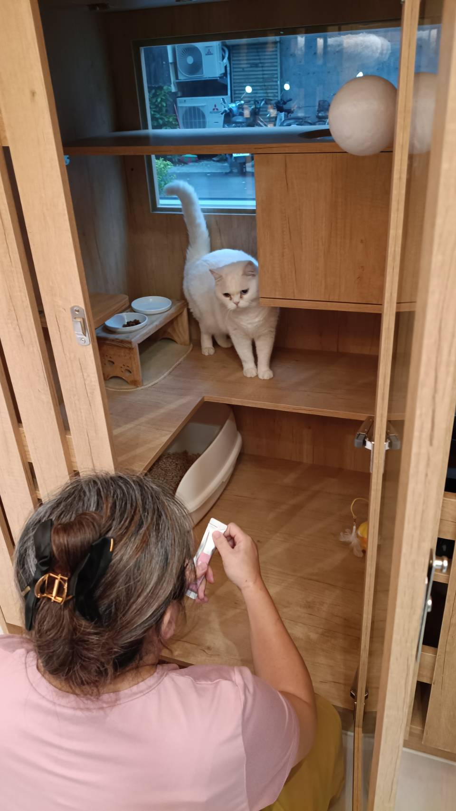
清房現場
先確認能否放風，再開始清理
照片是清房時的操作情境。完整順序請看上方「每日清房流程」；現場先確認是否能單獨放風，並留意貓砂、便尿與房門。
晚上清房：只處理必要髒污，不動貓咪物品。
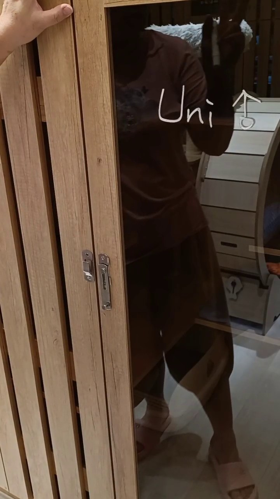
入住準備
房門姓名與多貓辨識
- 使用白色麥克筆，在房門玻璃寫入住貓咪的名字。
- 名字不要寫太大，避免被貓咪的手擦到。
- 男生在名字後標示 ♂。
- 同一家有多隻貓，要把每隻名字都寫上。
- 毛色不同時，至少替其中一隻註明毛色，讓大家能分辨。
- 毛色相同或照片難辨認時，另外口頭交接外觀差異。
- 退房後如果房間還沒清潔，保留門上的麥克筆標示，不要擦掉。
- 房間需要清潔並清除玻璃門文字時，用清水擦拭。
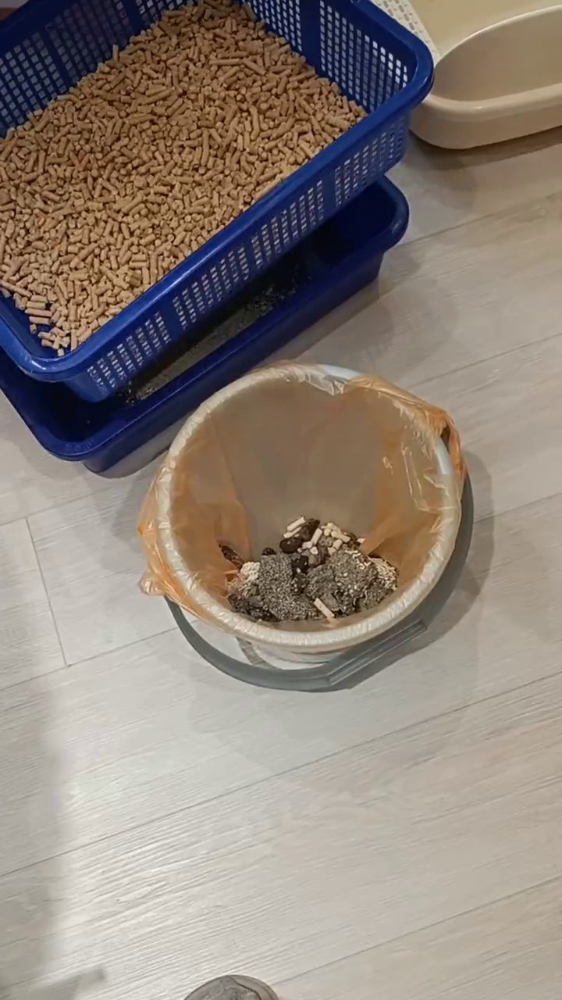
木屑砂清理
先撿髒污，再用篩盆分離粉末
- 先準備垃圾桶與藍色雙層篩盆。
- 從原砂盆撿出便便與髒污，放進垃圾桶。
- 把剩下的木屑砂倒進上層網盆。
- 用砂鏟翻動、刮開，讓粉末落到下層。
- 抬起上層網盆，確認砂粒與粉末已分開。
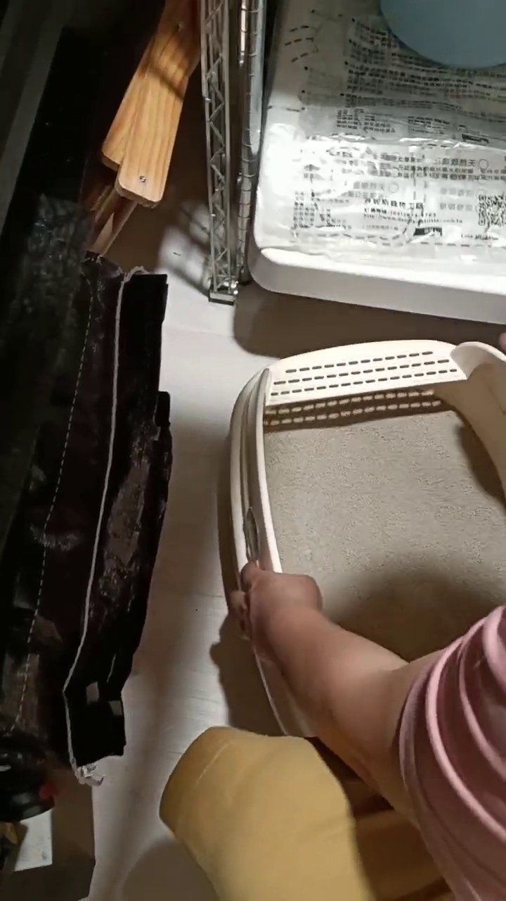
礦砂備盆
拿乾淨砂盆，分次加砂並鋪平
- 從用品區拿乾淨砂盆與砂鏟。
- 打開礦砂收納箱。
- 用砂鏟分次把礦砂加入砂盆。
- 最後把砂面鋪平，確認盆底均勻覆蓋。
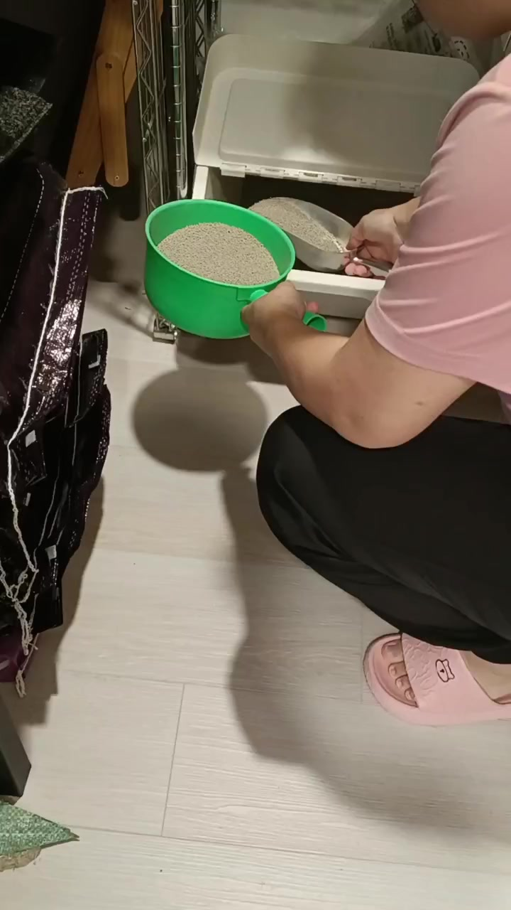
貓砂補充
需要加貓砂，就拿綠盆到儲藏室裝
- 確認房內貓砂不足，需要補充。
- 拿綠色盆子到儲藏室取用貓砂。
- 用砂鏟把貓砂裝進綠盆，再帶回房間補砂。
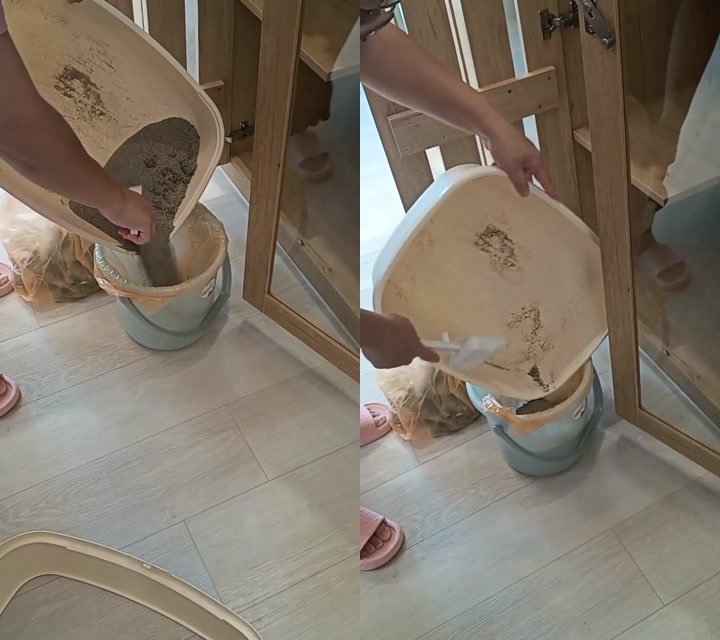
退房清砂
砂盆貼近桶口，慢慢倒完所有舊砂
- 垃圾桶先套好袋子，再移到砂盆旁邊。
- 把砂盆邊緣靠近桶口，慢慢傾斜，避免貓砂灑到地上。
- 用砂鏟把黏住與殘留的舊砂推進垃圾桶，確認整盆清空。
- 舊砂全部丟掉後，砂盆要在退房當天洗乾淨。
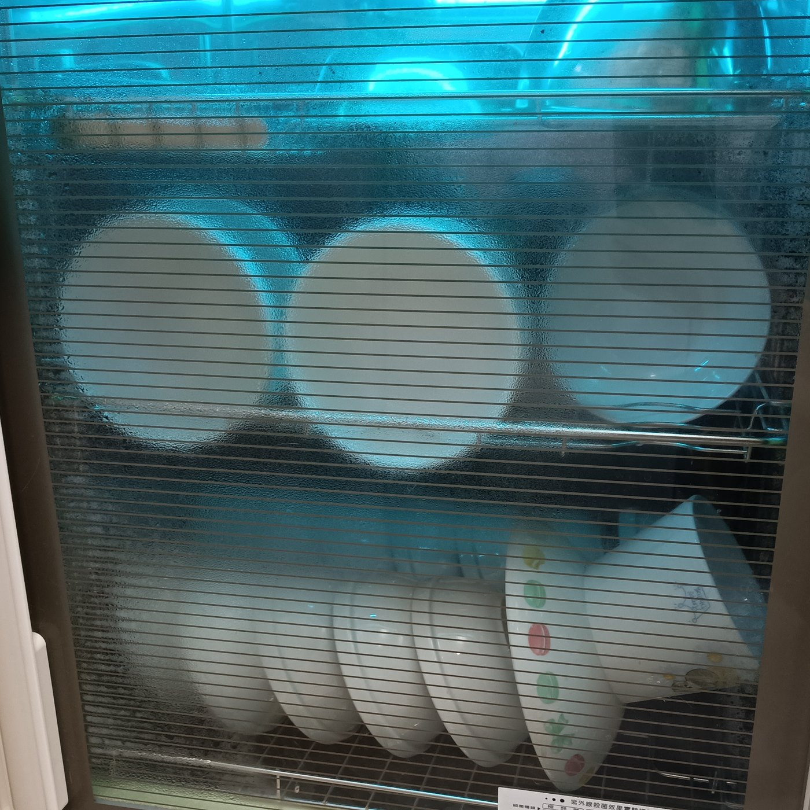
碗具烘乾
先倒掉積水，再直立烘 80 分鐘
- 先把上一輪烘好的碗拿出來，放進櫃子。
- 把當日用碗與盤子裡的水倒乾淨。
- 將碗盤直立、分開擺放，不要整疊平放。
- 確認彼此留有空隙後，設定烘 80 分鐘。
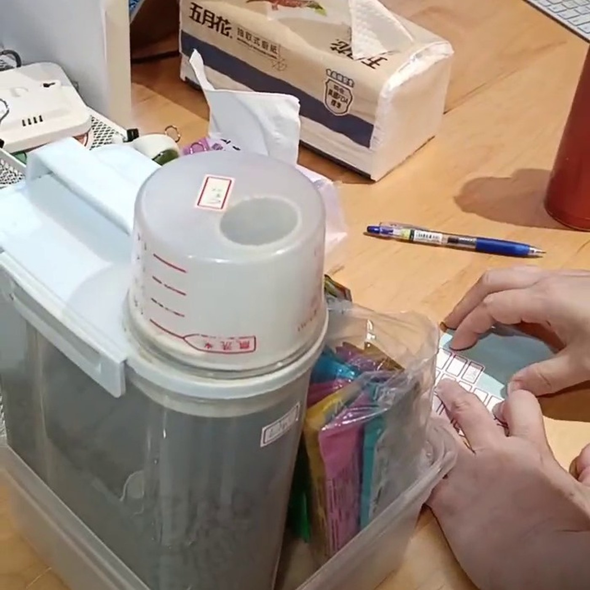
入住物品收納
三樣都貼名：碗架、食物透明盒、包包
- 準備該隻貓使用的碗架、食物透明盒與包包。
- 分別貼上寫有貓咪名字的標籤，三樣都不能漏。
- 飼料盒、量杯與分裝用品集中放進食物透明盒。
- 確認標籤清楚、物品完整，再放回指定櫃內。
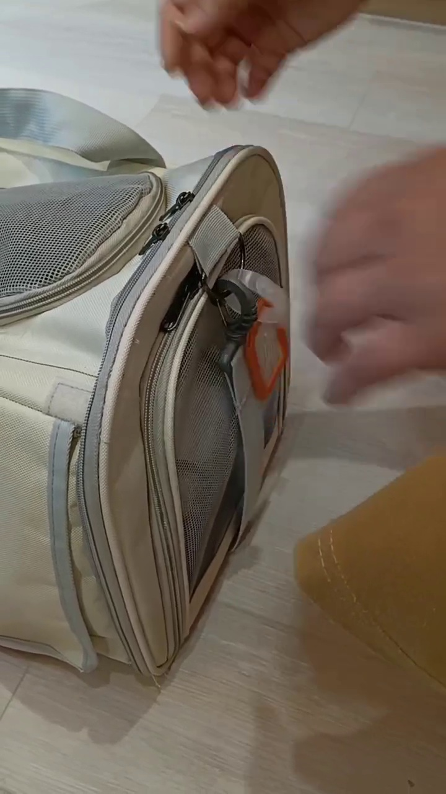
入住物品收納
先寫貓名，再把橘色標籤掛牢
- 在橘色標籤內放入寫有貓咪名字的紙條。
- 用透明扣帶把標籤固定在外出包提把或拉鍊旁。
- 拉一下確認不會鬆脫，名字也要朝外、能直接看見。
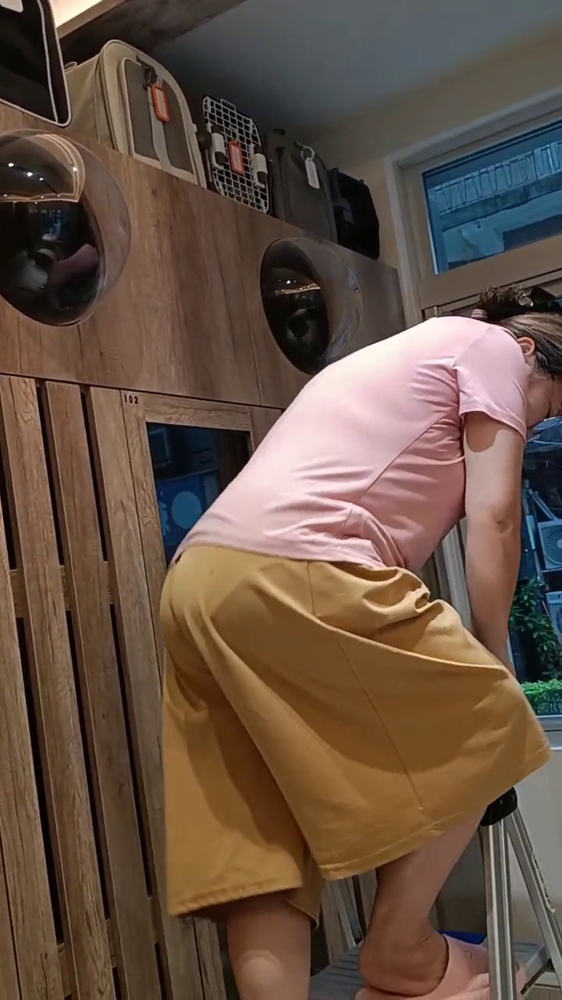
入住物品收納
梯子站穩，再把外出包放到房間上方
- 先確認外出包已貼名、拉鍊關好，用品沒有遺漏。
- 把折梯完全打開，確認四腳平穩再踩上去。
- 將外出包放到對應貓房上方，標籤朝外方便辨認。
- 下梯後把折梯收回原位，不留在走道。
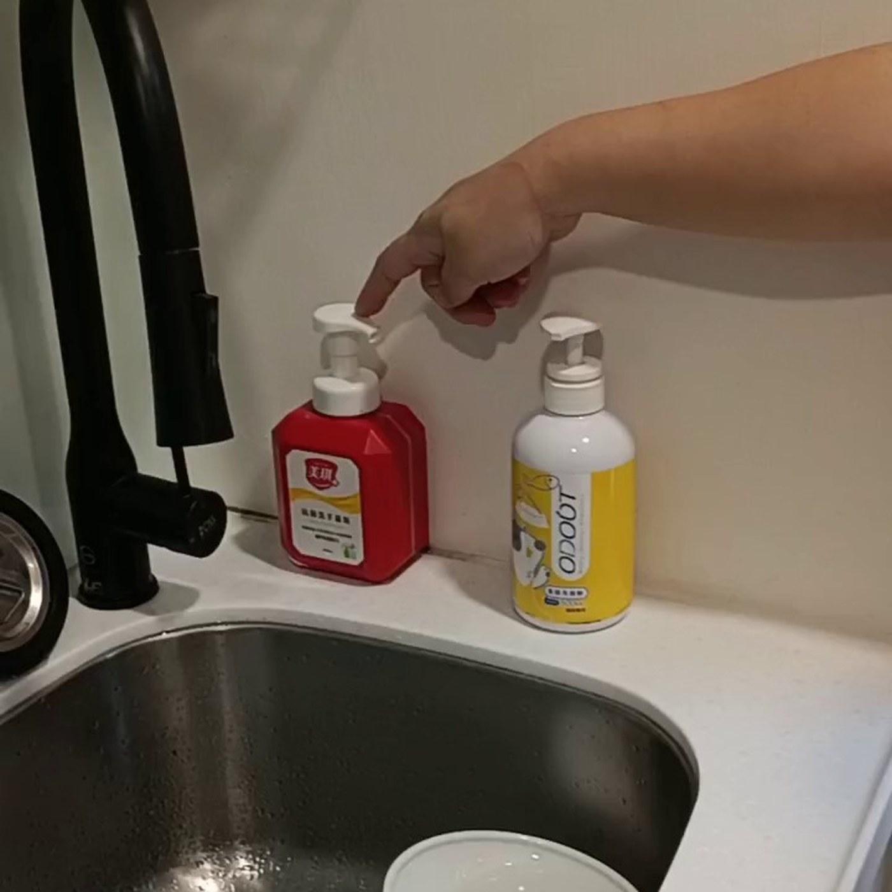
食具清潔
黃色洗碗精洗貓碗，紅色洗手乳要分開
- 上方海綿是貓咪食具專用。
- 黃色瓶是貓咪食具用洗碗精。
- 紅色瓶是人用洗手乳，不可碰到貓咪食具。
- 洗手時先避開水槽內食具，避免清潔用品混用。
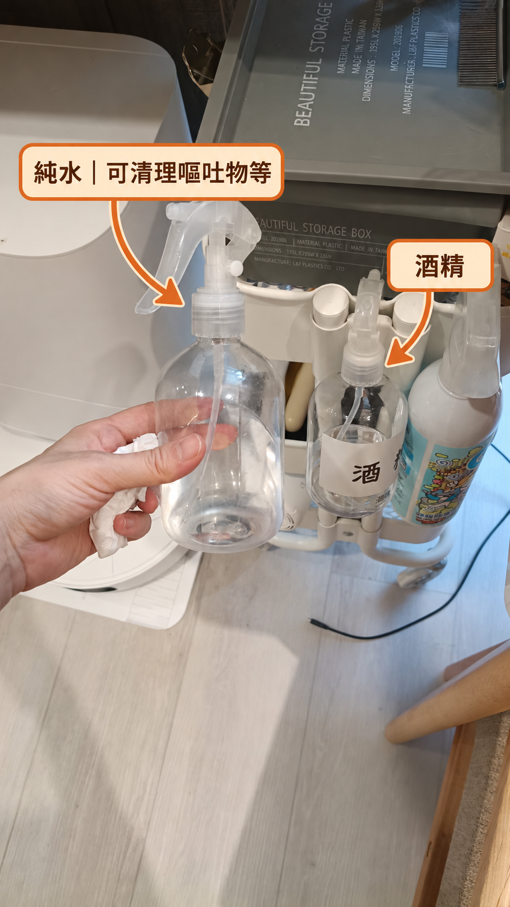
清潔用品
手上大瓶是純水，右側小透明瓶是酒精
- 手上拿的透明大噴瓶裝純水，可用來清理嘔吐物等。
- 右側貼有「酒」字的小透明噴瓶是酒精。
- 取用前先看瓶身與標示，不要和最右側白色噴瓶混淆。
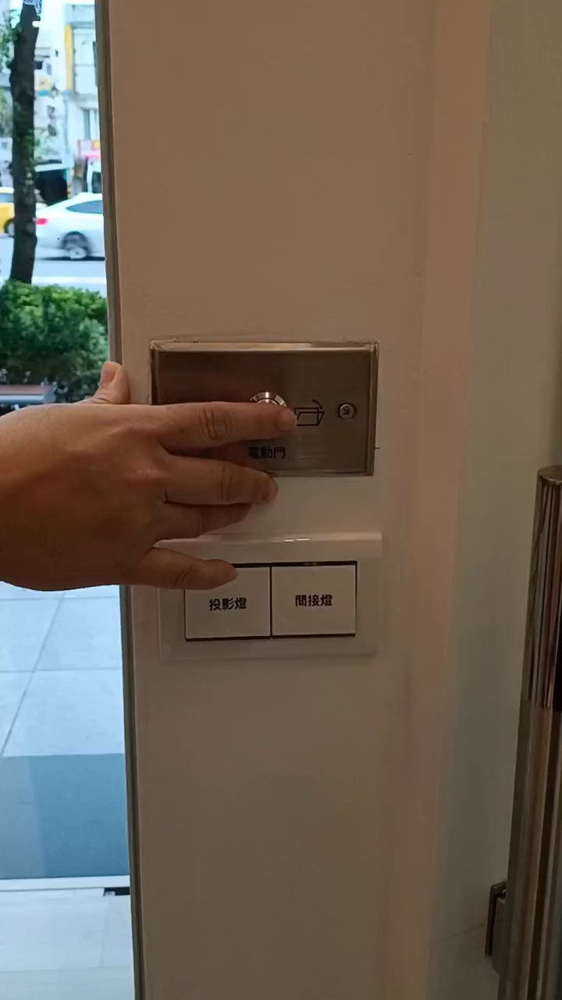
前廳防逃
兩扇門不能同時開：一扇關好，才能開下一扇
- 有人進出時，一次只開一扇門。
- 先確認外門已完全關閉，再操作內門。
- 不可為了趕時間同時開兩扇，避免貓從腳邊衝出去。
- 客人詢問時可以說：「請稍等外門關好，我再幫您開內門。」
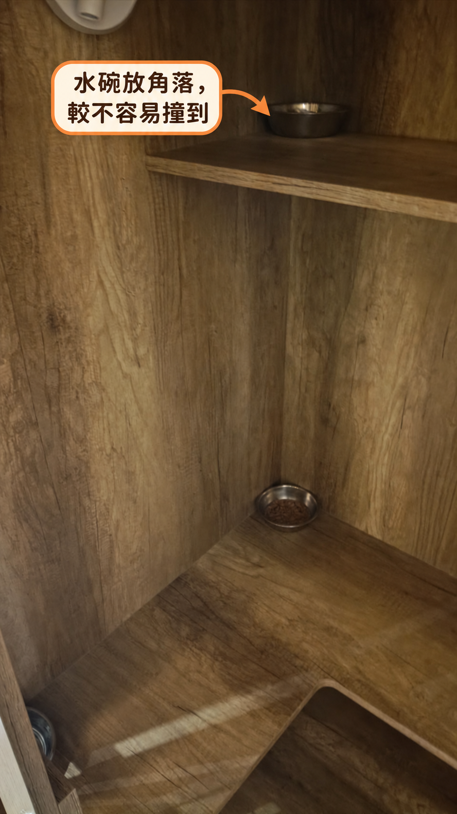
房內擺放
水碗放角落，較不容易撞到
- 整理房間前，先記住水碗原本的位置。
- 水碗靠層板角落擺放，減少貓咪活動時撞到的機會。
- 清房後放回原本角落，並確認水碗擺放平穩。
05
遇到這件事，要怎麼做？
先背「口訣」，操作時再展開動作與例外
不同家的貓，可以一起活動嗎？四關都通過才安排，任何一關不確定就分開
- 1吃飯、喝水、上廁所正常？
- 2願意自己出房活動？
- 3家長同意、現場可控制？
- 4沒有打架或哈氣、炸毛、低吼等壓力訊號？
四關都通過可陪同嘗試共同活動
任何一關未通過改為單獨活動
補充原則：愛滋貓可安排單獨活動，或留在房間內；未施打疫苗者建議留在房間內，不參與共同活動。
06
參觀流程
客人預約參觀時，依序確認安全、房型與入住規定
住宿規定速查健康、家長準備、照護與緊急應變；價格與優惠請看「價格」分頁
A訂房、入住、退房
- 電話、粉專私訊或 LINE 聯繫，先了解貓況。
- 住宿價格、訂金、時段與加價規則請看「價格」分頁，不在此重複列價。
- 館內有 24 小時視訊設備，但營業時間外沒有人員駐店；需要全日有人照護時，建議另找獸醫院或全日保母旅館。
- 入住、退房限委託人或指定代理人，需核對身分。
B健康資格與不適合入住
- 3 年內核心疫苗、1 個月內體外驅蟲證明。
- SOP 備註：幼貓約滿 1 個月可開始接種，第二劑約在 3 個月左右；實際仍依疫苗紀錄與現場評估。
- 因年齡或健康因素不適合施打疫苗，需提供健康檢查報告再評估。
- 疫苗施打後 7 日內不適合入住。
- 未施打疫苗者如經評估可入住，建議留在房間內，不參與共同活動。
- 愛滋貓先由夥伴個別評估，可安排單獨活動或留在房間內。
- 滿 6 個月原則上需結紮；未結紮成貓須個別評估；3–6 個月、15 歲以上先評估。
- 未離乳／3 個月以下、術後未康復、需擠便擠尿或定時皮下注射者不適合。
- 重大或傳染性疾病、寄生蟲感染不適合。
- 未事前溝通、當日臨時要求入住，可依評估拒絕。
C家長準備與店內配合
- 帶平常食物、熟悉氣味衣物／毯子／玩具；特殊貓砂也可自備。
- 若使用店內砂，可帶少量正在使用、帶熟悉氣味的舊砂混入；不用帶結塊或崩解粉末。
- 交代份量、時間、溫度、營養品與特殊餵食法。
- 可配合乾飼料、罐頭、生食、鮮食與每天 2–4 次餵食。
- 貓咪沒有排便、但吃喝正常時，可先與夥伴確認是否用無調味雞胸肉湯水協助補水；蒸雞肉與湯水不能取代完整主食。
- 店內常備皇家 F32、Orijen、礦砂、木屑／松木砂，砂盆有大、中、小尺寸可依貓咪選擇。
- 可代收網購包裹或就近代買；代購用品、代送美容的商品與交通費由家長負擔。
D活動、照顧與回報
- 一次只接待一組，參觀／入住／拜訪都先預約。
- 共同活動須家長同意，且吃喝排泄正常、願意出房、無明顯緊張或攻擊。
- 愛滋貓可安排單獨活動，或留在房間內；未施打疫苗者建議留在房間內，不參與共同活動。
- 其他不適合共同活動的貓咪，安排單獨活動。
- 刷牙、梳毛、塞藥、針筒灌水若引起強烈情緒，可依現場狀況拒絕或轉介。
- 嚴重不適應或影響其他貓咪住宿權益時，可調整活動時間、範圍，必要時拒絕住宿。
- 以照片、影片、文字回報吃喝、排泄、便便與活動狀況。
E就醫與緊急應變
- 需要就醫時先通知委託人。
- 送往家長指定醫院或鄰近醫院。
- 醫療費與交通費由委託人負擔。
- 住宿期滿後 24 小時未退房且未告知續住，視為棄養並依法處理。
話術
現場話術・照情境說
工作時查：先選情境，再看怎麼說與要確認什麼